Tree Based Computing
This post is about one of the most portable and ergonomic1 ways I've found to use the computer outside. It's highly flexible – works anywhere you can find a tree! This particular tree already had a rope around it for hanging a hammock:
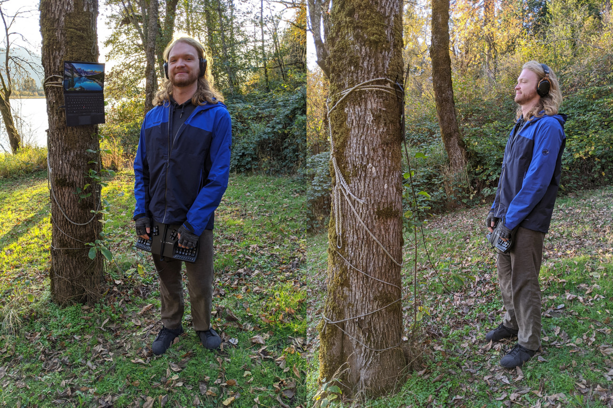
This might look quite odd at first – very understandable! If that impression is prohibiting you from giving it a try, perhaps consider trying out deck desking or hammock computing to warm up to the idea of outdoor computing. For indoor uses of suspension, see the deskless work-from-home setups post.
Inspiration
Back in the fall of 2017, I was feeling confined by my passion and profession of software engineering. I do not regret this focus one bit, it's a very generative and rewarding thing to focus on! However, it seemed to require me to stay inside all the time. I got tired of this, yearning to spend more time surrounded by nature and breathing fresh air. I started questioning the assumption that I needed to stay inside all the time, and started brainstorming solutions.
Specifically, I sought a way to work outside nearly anywhere, such that I could optimize for:
Awesome views!
Not having many people around / walking by (less distraction and feels less obtrusive).
Avoiding sitting. I get quite enough sitting while indoors.
Portability – being able to hike or bike out to a spot.
Simplicity – I wanted it to be an approach easily shared with others (like in this post!).
To satisfy these goals, I required a substitute for a standing desk. So I started considering what common things in nature can act as a furniture substitute. Suddenly it dawned on me: Trees!!
By using trees to support the screen, it's quite feasible to work outside ergonomically with very little equipment. Here's a photo while writing this post:
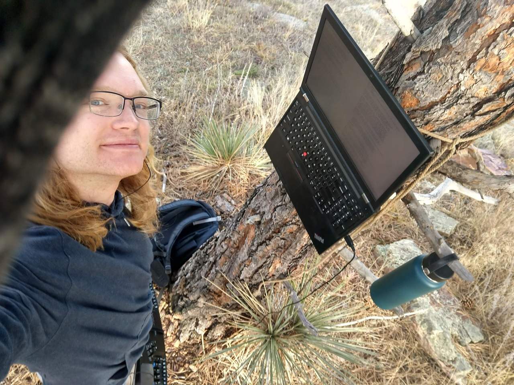
How to attach laptops to trees
I'm a long-time user of ThinkPad laptops, and so I have only tried to attach those to trees. I have some ideas2 for doing this with other laptops, but haven't tried it yet.
Many, if not all ThinkPads allow the screen to be open 180°, such that it is flat with the plane of the keyboard. For example, here is a closer picture of an X1 Carbon ThinkPad open flat against a tree:
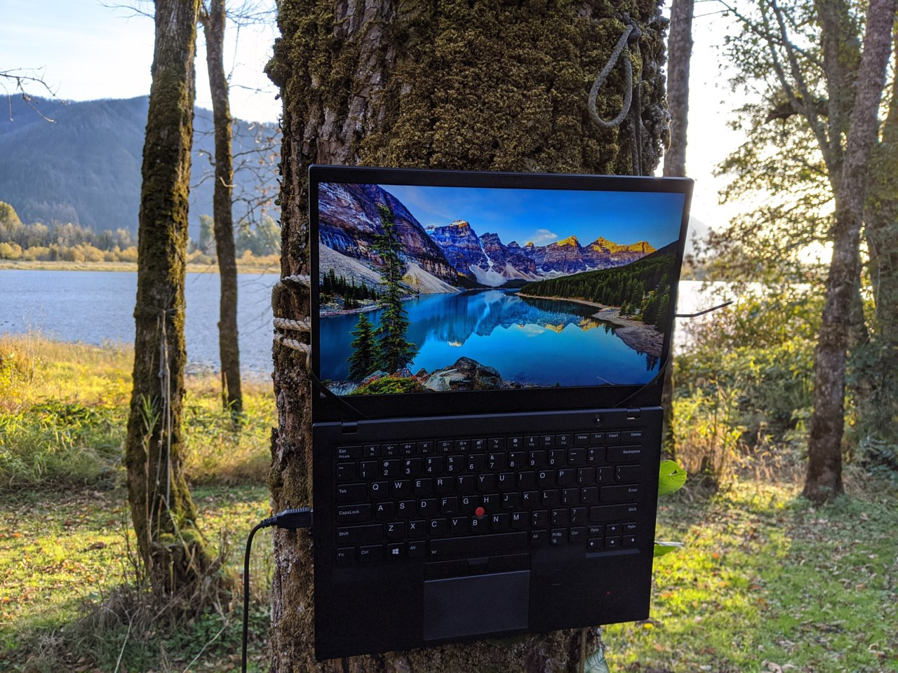
The laptop is supported by releasable zip ties$ which are threaded between the screen and chassis near the hinges, and then around the rope. Not much tension is needed on the rope, friction is enough to hold everything up. A ratchet strap works quite well too, but a simple rope can be less fuss. Just throw it around the tree, perhaps over a branch or two on the other side, and tie a simple knot.
Many other things than zip ties could work, like string or wire. Releasable zip ties are quite apt for this purpose, though, because they are adjustable, strong, and rigid for threading.
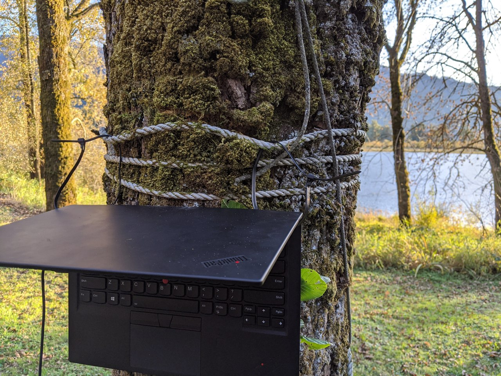
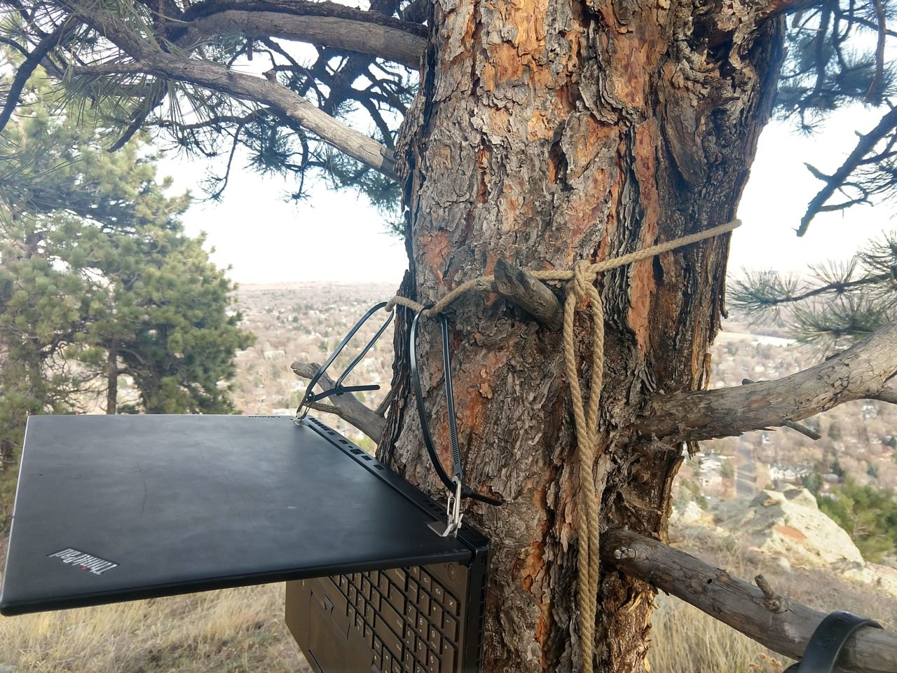
The latter picture is of my P51, which is a much heavier laptop than the X1. I've found it convenient to put little zip ties around the hinges, to attach tiny carabiners3. This way, I can clip right onto the zip ties, rather than fussing with supporting the weight of the laptop while threading the zip tie.
How to attach keyboards to pants
These days, my preferred standing keyboard setup is also the simplest I've found. It just requires two things: a Kinesis Advantage keyboard$ and a heavy duty 28" long zip tie$. The large zip tie is simply threaded through a belt or pants drawstring, and around the keyboard:
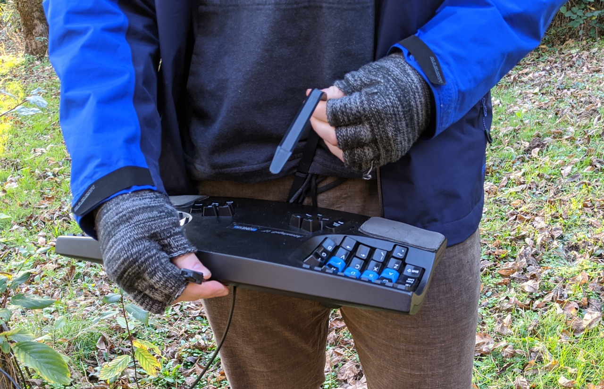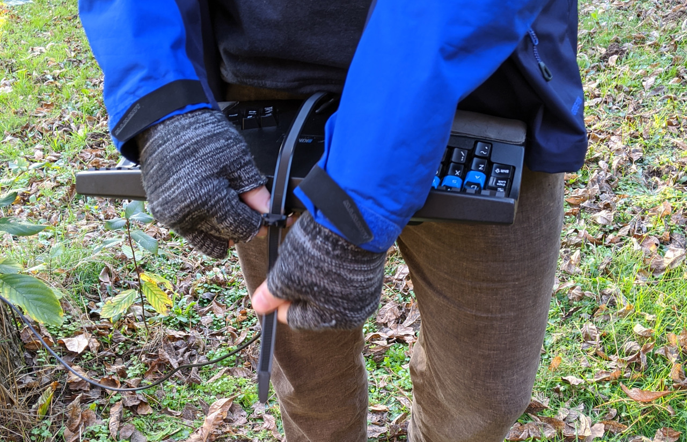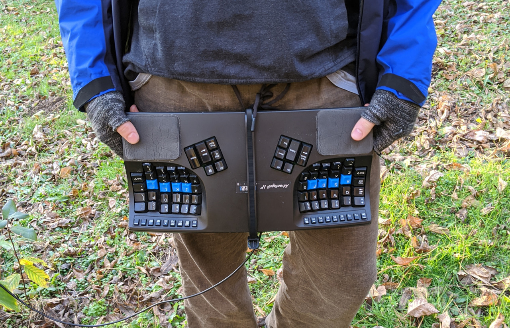
This takes just a few seconds to setup, allows a lot of mobility, and keeps the keyboard in the right spot / orientation.
See the "Deskless standing keyboard" section of the "Deskless Ergonomic Work-From-Home Setups" post for a bit more info. There will hopefully be a more detailed post about this in the future.
Update 2020-05-25: The giant releasable zip ties work pretty well for a while, but they started breaking on me due to repeated flexion. Currently I'm just putting a leather belt around the keyboard, and this is working well, thankfully the belt holes were already at the proper length for it to loop around twice. See my "suspending keyboard from ceiling" update for pictures of this.
Postural variety: leaning / sitting
I don't find it practical to stand for more than a couple hours. One thing that helps a lot is to move around a bit or stretch. I often find myself listening to tunes and moving to the music.
Even with some movement, for extended sessions it can be very helpful to be able to lean or sit, perhaps on another tree, stump, or rock. Part of the fun of tree based computing is choosing your tree. I did a fair bit of the work on this post at this tree, near a very nice rock formation for leaning and sitting:
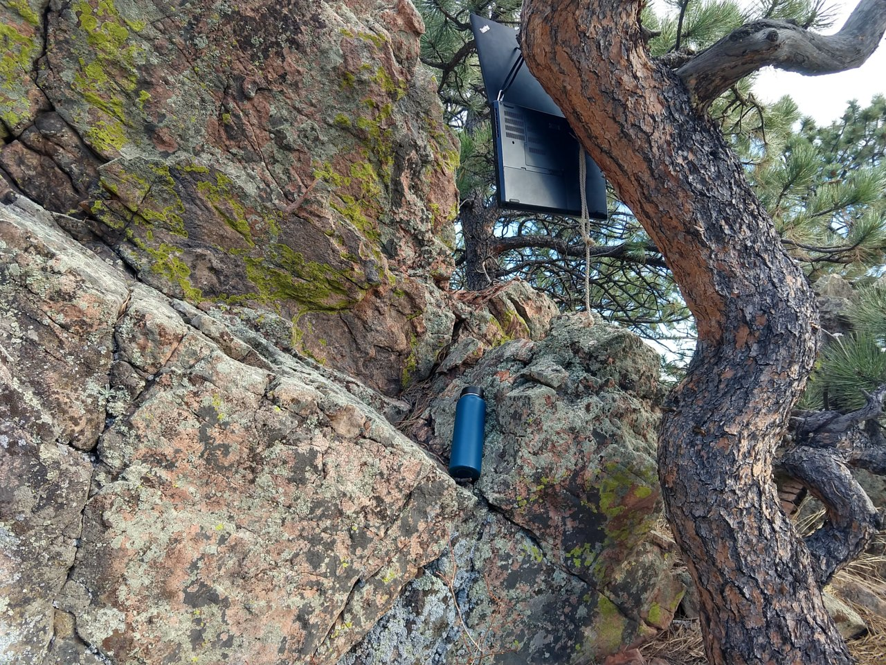
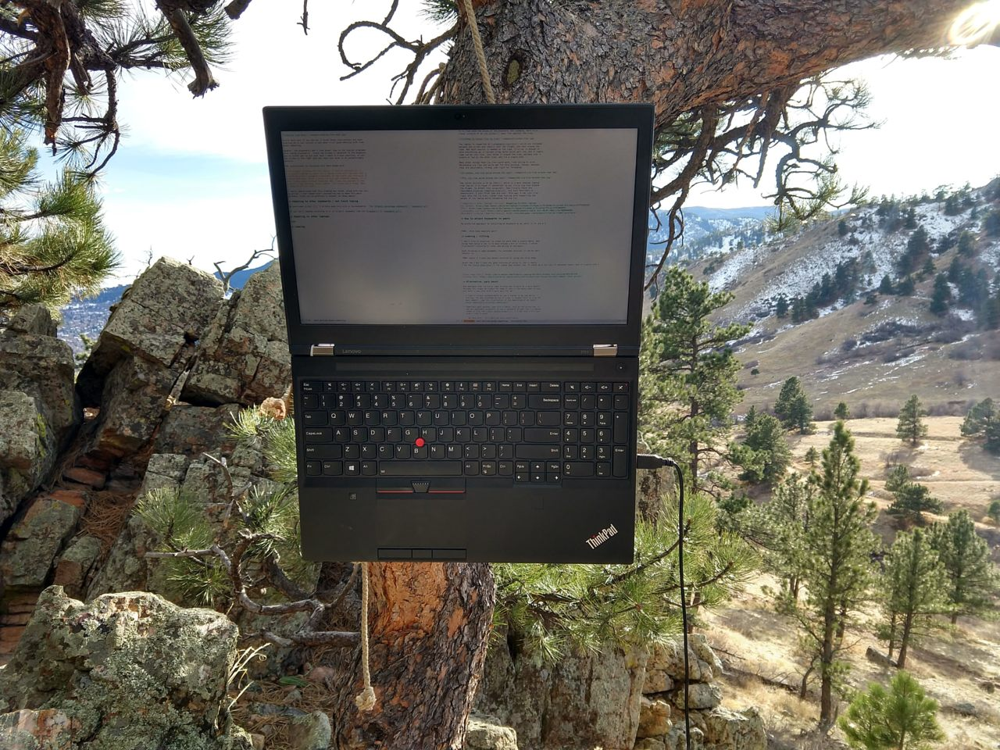
Since picking your tree based on this criteria is not always practical or comfortable, it can be nice to bring along a leaning stool. I've tried two relatively portable leaning stools:
The Focal Mogo Stool$ is very comfortable. It also packs somewhat portably, by collapsing the leg and attaching it to the back of the seat. It can fit just fine in a larger backpack. I often use it at a treadmill desk, to take a break from walking.
The Sitpack Zen is far more portable, about the size of a medium size water bottle and just 1lb, but not quite as comfortable. I only just used it for the first time a few days before publishing this post, and I really like it! I will probably always pack it instead when hiking or biking. Here are a couple photos:
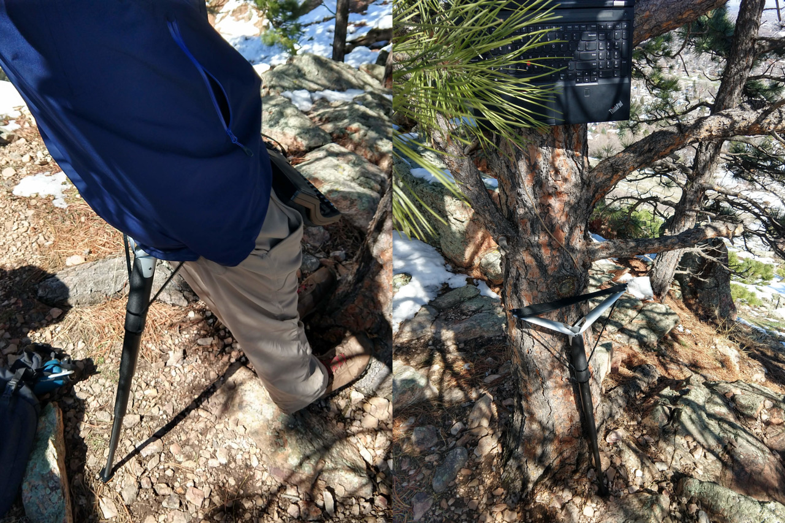
Handling the sun
The sun can be troublesome for computer use outside, but it's not as prohibitive as might be intuitively expected. Some general solutions and principles related to this are discussed in the "Working with Sun" section of the deck desk post. I have one main tip particularly for tree based outdoor computing, demonstrated by the photos below:
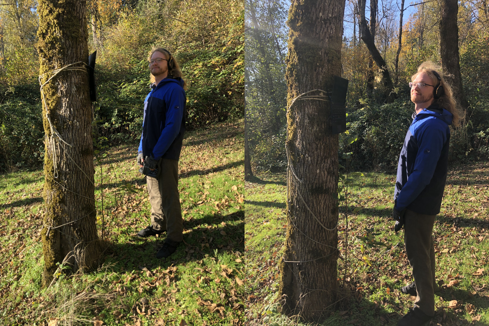
On the left, I'm standing in the shadow of the tree trunk, and so can comfortably read the screen. On the right, I'm standing outside the shadow, so the sun would shine in my eyes, making the screen unviewable. By positioning the screen opposite the sun and standing in the tree's shadow, there's no direct sunlight on the screen, and none in my eyes either!
Wearing a hat which provides shade is also worth considering.
Update: adjustable paracord tie-downs
I wrote most of this post a few months ago, in the fall. Since then, I acquired some adjustable paracord tie-downs$, and have started preferring using one or two of these to suspend my laptop. The viability of this approach is probably related to nearly all Colorado trees having low branches. Here are some photos of this approach:
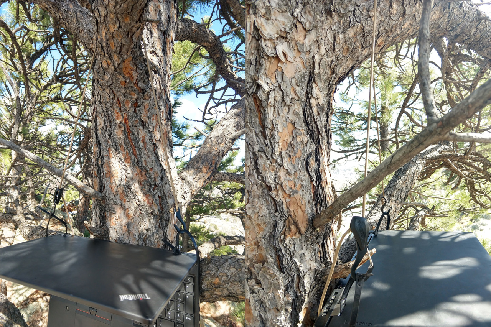
I like these because the length between the hooks is easily adjusted – just hold down a button and slide the cord.
Prior art: "Standing Tree Desk" on instructables
After realizing that trees were a great source of support, I did some googling around for using them for computer use. I only found one example, a set of instructions for a beautiful laser-cut desk that can be strapped to the tree. Here are some photos from that page:
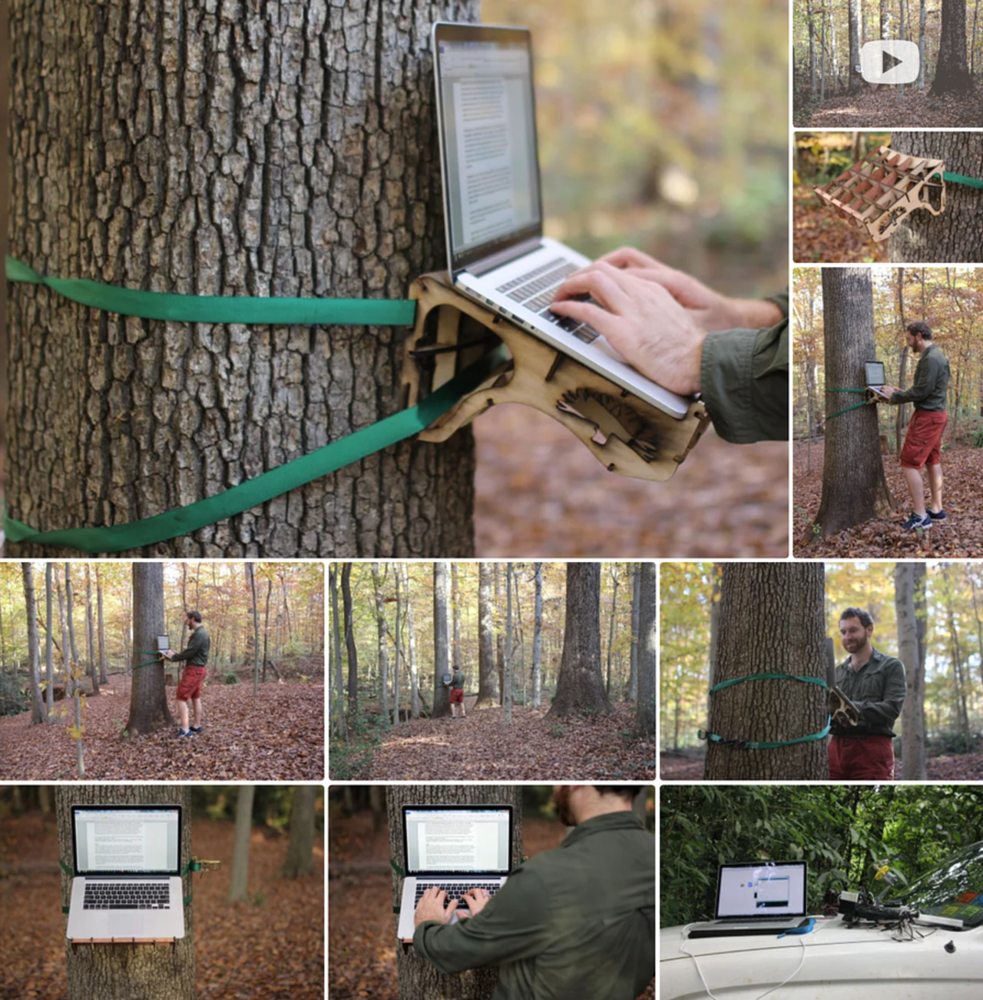
Pretty darn cool if you ask me! I think those instructions are what inspired me to use ratchet straps when first experimenting with tree based computing.
However, the ergonomics don't look great, due to the typical problems with laptop ergonomics. Since the screen is adjacent to the keyboard, you've either got to put your neck / back in a poor position, or put the screen in the right spot but have your arms in an uncomfortable posture.
The instructions for building this desk ended with:
The biggest problem with this design is lack of portability. I originally wanted to laser cut a laptop stand with the idea that it would be a quick assembly/reassembly in the field, and otherwise it would flat-pack. After I press-fit this guy together though, it is not coming apart without breaking. But I have new designs in the works! I was thinking going simpler. Two planks and a hinge. What ideas do all you have?
I really appreciated that this problem was noted, along with the call to action. I did indeed start considering how to make this more portable. Turns out it's feasible to use tree support without a platform at all, as shown earlier!
Go try it!
I thoroughly enjoy my tree based computing sessions – it's a rather nice way to use your computer while also immersing yourself in nature4. If this seems interesting to you, I encourage you to go try it! I also encourage you to experiment – if the ideas here don't directly work for you, perhaps you can find a variation that does.
I do have one ask before you set off on such adventures, which is to please be considerate of other people. Typing away at a busy scenic overlook doesn't seem so cool for those that are out there to enjoy peace and quiet away from technology. For this reason, along with considerations of my own focus, I much prefer spots that are tucked away.
Happy trees (based computing)!
Footnotes
I am a hobbyist in ergonomics, I have no credentials related to ergonomics, nor have I studied much of the academic literature on the topic. Mostly, I've just followed my own intuition, sought what feels good, and avoided what causes pain. So please take my advice with a grain of salt, and perhaps experiment to see what works for you!↩︎
Laptops that do not open to 180 degrees could potentially be adapted by use of a wedge between the laptop body and tree. Alternatively something like the standing tree desk platform could be used.
Another thing that might be helpful would be some form of harness which wraps around the laptop body and provides attachment points. This would be helpful for laptops that do not have a sufficient gap between screen and body for threading zip ties.↩︎
Specifically these are DutchWare titanium ridgeline biners, but such fanciness is unnecessary, I just think they are cool.↩︎
I can imagine that some nature lovers might be horrified by this idea. They might treasure the unplugged nature of a hike, rightfully so! For me, the idea here is that this way I can spend much more time in nature than I otherwise could (while still fulfilling my interests and obligations). This complements my more peaceful and present times in nature, rather than replacing them.↩︎
Some links are amazon affiliate links, which sometimes send me a bit of money when you make purchases after clicking them. The purpose of this blog is sharing information and ideas, not making money. But I figure I may as well add them, and I appreciate usage of them!